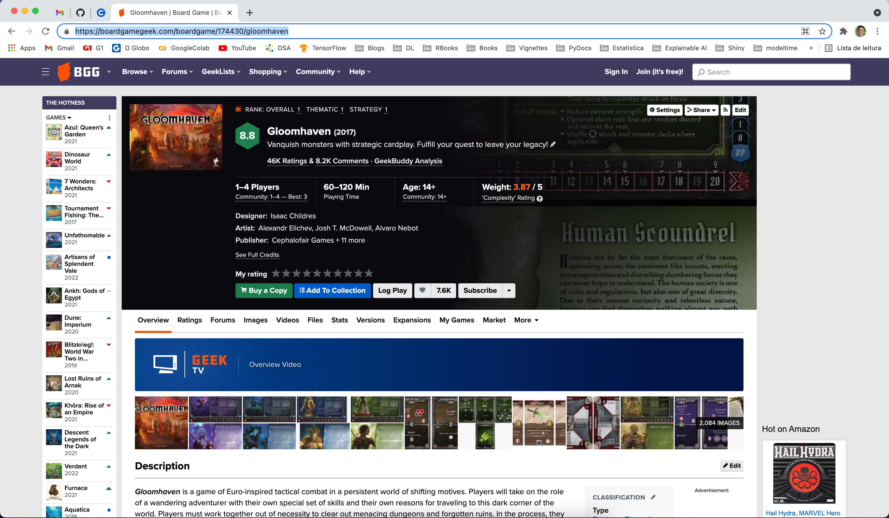

![]()
Código
knitr::include_graphics(path = 'images/web_scrapping_cycle_curso_r.png')
Sempre joguei os jogos de tabuleiro mais tradicionais, como Banco Imobiliário, Scotland Yard e War. Esses são jogos muito populares, apesar de cada partida ser muito repetitiva e eles demandarem uma quantidade razoável de jogadores para que tenham graça - e, no meio de uma pandemia, se já acabava sendo chato jogar um deles, a coisa passou a ser impossível. Mas será que não existem alternativas (mais divertidas, inclusive) para continuar com a distração num momento tão difícil como esse? Como eu bem descobri, a resposta estava nos próprios jogos de tabuleiro - mais precisamente, na reinvenção que eles sofreram nas últimas décadas.
Existem inúmeros jogos de tabuleiro disponíveis atualmente e um número crescente de pessoas que os curtem. Dada esta diversidade de novos títulos, inúmeros portais têm focado em criar e manter essa cultura, trazendo reportagens, fóruns, marketplaces, reviews, rankings e fichas técnicas de cada um deles. Dois exemplos destes sites são o BoardGameGeek e a Ludopedia: ambos possuem praticamente o mesmo conteúdo, mas o primeiro é um portal americano e o segundo é brasileiro. Outro ponto interessante é que o consumo de informações desses portais não precisa ocorrer pelo browser, uma vez que ambos fornecem uma API. A Ludopedia oferece uma API REST bastante intuitiva1, enquanto o BoardGameGeek usa uma API XML que eu acabei achando meio complicada de usar. Mas o que isto tudo tem haver com dados?
Bom, logo que descobri esse hobby, acabei ficando muito perdido sobre quais são os títulos mais legais para se jogar. São tantas as possibilidades e informações disponíveis sobre cada jogo, que eu me peguei navegando entre inúmeras páginas naqueles portais para tentar encontrar aquilo que eu estava buscando. Assim, acabei tendo a ideia de compilar essas informações e colocar tudo dentro de uma linguagem de programação, a fim de deixar a análise de dados me ajudar a encontrar os jogos que mais combinavam com aquilo que eu estava buscando. Para isso, tive a ideia de pegar as informações dos jogos do BoardGameGeek (BGG daqui em diante) através de sua API, tabular tudo o que estava buscando e partir para o abraço. Mas nada é tão simples quanto parece.
A parede que encontrei é bem chatinha: o request da API XML do BoardGameGeek funciona muito melhor quando usamos o código numérico de identificação do jogo. Quando passamos o nome do jogo para o request, ele precisa estar grafado igual à como está na base do BGG, caso contrário ele pode falhar em trazer o que você está buscando ou trazer todos os títulos que tenham um match parcial com aquele que você buscou (daí para a frente é só caos). Outra ressalva aqui é que essa API não oferece nenhum tipo de método através do qual podemos pegar um de-para dos IDs numéricos para os nomes dos jogos, e o código numérico deles também não é sequencial. Logo, não dá para fazer uma busca gulosa e loopar os IDs de 1 até n. A solução mais simples para o problema é montar a nossa própria base de-para, catando o nome dos títulos e o seu ID numérico de algum lugar do site do BGG - e esse lugar é a página que contém o ranking dos jogos de tabuleiro no site.
Neste post eu vou mostrar como raspar a página do ranking do BGG, usando como base o fluxo do Web Scrapping que a galera da Curso-R criou (Lente (2018)), e muito bem ilustrada na figura abaixo.
knitr::include_graphics(path = 'images/web_scrapping_cycle_curso_r.png')
A primeira coisa a se fazer é entender como funciona a página que queremos raspar e o seu fluxo de paginação - isto é, como fazer para navegar de uma página para a outra. No nosso caso, navegamos até a página inicial do ranking do BGG através do link https://boardgamegeek.com/browse/boardgame; isso deve nos levar à uma página similar à da figura abaixo.
knitr::include_graphics(path = 'images/identificar_1.jpg')
Podemos ver que a página que contém o Top 100 dos jogos de tabuleiro apresenta as informações do ranking dentro de uma tabela: cada jogo no ranking ocupa uma linha da tabela, e cada coluna abriga uma informação distinta sobre o título que ocupa àquela posição (i.e., ranking, título, uma pequena descrição, quantidade de votos, notas,…). Além disso, podemos ver que o ranking é composto por dezenas de páginas, e podemos navegar através delas pela paginação acima ou abaixo da tabela.
knitr::include_graphics(path = 'images/identificar_2.jpg')Ao passarmos para a segunda página, podemos ver que agora temos acesso às informações do Top 101 ao 200 dos jogos de tabuleiro. Assim, dá para entender que cada página deve conter uma tabelinha com 100 linhas, uma para cada título ocupando cada uma das posições. Outro ponto importante é que quando mudamos para a segunda página do ranking, houve a adição do sufixo page/2 à url. Se brincarmos um pouquinho com essa url podemos ver que é possível navegar entre as páginas simplesmente mudando o número ao final da url: https://boardgamegeek.com/browse/boardgame/page/1, https://boardgamegeek.com/browse/boardgame/page/2, https://boardgamegeek.com/browse/boardgame/page/3 e assim por diante. Ou seja, para raspar as páginas do ranking basta usarmos a url base (https://boardgamegeek.com/browse/boardgame/page/) e variar apenas a numeração ali no fim.
Uma vez que entendemos de que forma funcionam as páginas que queremos raspar, precisamos agora é entender de onde vem o dado que queremos extrair através do código da página. De forma bem geral, podemos usar as ferramentas do desenvolvedor do nosso navegar e ir até a aba de Network para ver se a página está fazendo alguma chamada à uma API para carregar o seu conteúdo - se esse for o caso, podemos aprender a usar a API e usar ela para obter os dados que buscamos. Caso não haja uma API por trás da informação que estamos buscando, podemos ir direto na aba Elements e olhar o código HTML para entender como o que estamos buscando está estruturado.
No nosso caso, não consegui achar uma API alimentando os dados da tabela que queremos raspar - aparentemente, todo o dado é carregando junto do HTML da página. Assim, olhando o código HTML da página, dá para ver que a tabela que buscamos está dentro de uma tag table. Portanto, se conseguirmos pegar o HTML da página, teremos acesso aos dados que estamos buscando.
knitr::include_graphics(path = 'images/navegar_1.jpg')
Como sabemos a url base e como navegar entre as páginas, a ideia será tentar pegar uma das páginas e ver se temos sucesso na tarefa. Vamos então para o R. Primeiro vou carregar alguns pacotes para nos ajudar a fazer o web scrapping, manipular os dados e algumas coisas mais. Vou então criar um objeto que vai receber a url base do ranking do BGG e mais um objeto com a numeração da página do ranking que vamos tentar pegar na primeira tentativa.
library(tidyverse) # core
library(httr) # web scrapping
library(xml2) # parsear
library(fs) # mexer com paths
library(ggforce) # extendendo o ggplot2
## para raspar o site
base_url <- 'https://boardgamegeek.com/browse/boardgame/page/'
# definindo qual pagina vamos raspar
pagina_alvo <- 1Com estes pacotes e objetos definindos, vou utilizar então a função GET do pacote httr para fazer o request da página. Vou passar o endereço da página para a função e, também, escrever o resultado do request para o disco passando uma outra função (write_disk) para o GET. O benefício disso são pelo menos dois: (1) podemos manter uma memória exata do que foi raspado naquele dia e (2) usar o dado raspado offline, sem a necessidade de ter que ficar bombardeando o site o tempo todo de resquests.
## criando pasta temporaria caso ela nao exista
temp_folder <- 'temp'
if (!dir_exists(path = temp_folder)) {
fs::dir_create(path = temp_folder)
}
## passando o get e salvando o arquivo html
resultado <- GET(url = str_glue(base_url, pagina_alvo),
write_disk(path = str_glue('{temp_folder}/page_{pagina_alvo}.html'),
overwrite = TRUE)
)Uma vez que o request foi feito, podemos ver o objeto resultante. É possível ver que tivemos sucesso em nossa requisição através do status 200, e também podemos ver que o conteúdo obtido é um documento HTML (conforme esperado). Beleza, temos o conteúdo; agora precisamos extrair os dados a partir dele.
sprintf('Status code: %.0d', resultado$status_code)[1] "Status code: 200"O que estamos buscando está dentro de uma tabela no código HTML, conforme havíamos visto anteriormente. Podemos tomar vantagem disto e buscar a tag table dentro do código HTML através do respectivo XPath utilizando a função xml_find_all. Com este resultado, podemos então utilizar a função html_table do pacote rvest, que é muito útil em casos como esse: ela é capaz de converter a tabela HTML diretamente para uma tibble. Como o resultado desse processo é uma tibble como o primeiro elemento de uma lista, vou usar a função pluck para extrair este objeto.
## parseando o html para um tibble
ranking_pagina_1 <- resultado %>%
# pegando o conteudo do GET
content() %>%
# pegando o xpath que contém a tabela
xml_find_all(xpath = '//table') %>%
# parseando o codigo html para o rvest
rvest::html_table() %>%
# extraindo o primeiro elemento da lista
pluck(1) %>%
# dropando qualquer valor do ranking the não seja um número
filter(str_detect(string = `Board Game Rank`, pattern = '[A-Za-z]', negate = TRUE))
ranking_pagina_1# A tibble: 100 × 7
`Board Game Rank` `Thumbnail image` Title `Geek Rating` `Avg Rating`
<chr> <chr> <chr> <chr> <chr>
1 1 "" "Brass: Birmi… 8.419 8.60
2 2 "" "Pandemic Leg… 8.386 8.53
3 3 "" "Gloomhaven\n… 8.370 8.60
4 4 "" "Ark Nova\n\t… 8.326 8.54
5 5 "" "Twilight Imp… 8.241 8.61
6 6 "" "Terraforming… 8.220 8.37
7 7 "" "Dune: Imperi… 8.215 8.43
8 8 "" "Gloomhaven: … 8.182 8.46
9 9 "" "War of the R… 8.181 8.54
10 10 "" "Star Wars: R… 8.172 8.42
# ℹ 90 more rows
# ℹ 2 more variables: `Num Voters` <chr>, Shop <chr>Beleza! Já temos quase tudo o que queríamos! Só faltou uma coisinha: onde estão os links com o id numérico único de cada título? Se voltarmos ao código HTML, essa informação parece não estar presente na tabela…mas calma aí, vamos dar um passo para trás e tentar entender onde estaria essa informação. Se abrirmos a página de alguns jogos e olharmos as urls podemos ver que existe um padrãozinho: a url de cada título usa um sufixo na forma boardgame/<sequência numérica>/<nome do jogo>.
knitr::include_graphics(path = 'images/parsear_1.jpg')
Essa sequência numérica ali na url para o título na página nada mais é do que o id que estamos buscando. Se procurarmos este padrão dentro do HTML da página do ranking do BGG, podemos ver que ele está dentro do XPath da tabela que já havíamos rapasdo, mas dentro de uma outra tag. Dado que ainda temos o resultado do nosso request, podemos então utilizar o XPath para pegar todos os links na tabela HTML que possuem a classe primary.
resultado %>%
# pegando o conteudo do GET
content() %>%
# pegando todos as tags de link na classe primary
xml_find_all(xpath = '//table//a[@class="primary"]') %>%
# pegando so os primeiros exemplos
head(){xml_nodeset (6)}
[1] <a href="/boardgame/224517/brass-birmingham" class="primary">Brass: Birmi ...
[2] <a href="/boardgame/161936/pandemic-legacy-season-1" class="primary">Pand ...
[3] <a href="/boardgame/174430/gloomhaven" class="primary">Gloomhaven</a>
[4] <a href="/boardgame/342942/ark-nova" class="primary">Ark Nova</a>
[5] <a href="/boardgame/233078/twilight-imperium-fourth-edition" class="prima ...
[6] <a href="/boardgame/167791/terraforming-mars" class="primary">Terraformin ...E aí estão os links! Agora é só pegar eles, colocar como uma coluna dentro da tabela que já havíamos parseado e pronto! Os elementos básicos do que buscávamos estão em seus devidos lugares. Agora é tentar repetir e escalar.
# colocando os links em uma lista
links <- resultado %>%
# pegando o conteudo do GET
content() %>%
# pegando todos as tags de link na classe primary
xml_find_all(xpath = '//table//a[@class="primary"]') %>%
# pegando o atributo href
xml_attr(attr = 'href')
# colocando os links na tabela
ranking_pagina_1 <- ranking_pagina_1 %>%
mutate(
# colocando os links em uma coluna
link = links
)
ranking_pagina_1# A tibble: 100 × 8
`Board Game Rank` `Thumbnail image` Title `Geek Rating` `Avg Rating`
<chr> <chr> <chr> <chr> <chr>
1 1 "" "Brass: Birmi… 8.419 8.60
2 2 "" "Pandemic Leg… 8.386 8.53
3 3 "" "Gloomhaven\n… 8.370 8.60
4 4 "" "Ark Nova\n\t… 8.326 8.54
5 5 "" "Twilight Imp… 8.241 8.61
6 6 "" "Terraforming… 8.220 8.37
7 7 "" "Dune: Imperi… 8.215 8.43
8 8 "" "Gloomhaven: … 8.182 8.46
9 9 "" "War of the R… 8.181 8.54
10 10 "" "Star Wars: R… 8.172 8.42
# ℹ 90 more rows
# ℹ 3 more variables: `Num Voters` <chr>, Shop <chr>, link <chr>Como já sabemos pegar e parsear uma página do ranking do BGG, a ideia aqui será repetir o processo anterior para uma segunda ou uma enésima página. Para isso, vou consolidar o que fizemos anteriormente em duas funções: uma para fazer o request da página do ranking do BGG (pega_pagina) e uma outra função para parsear o conteúdo de um request para uma tibble (parser_pagina).
# função para fazer o GET
pega_pagina <- function(url_base, pagina, save_dir) {
## junta a base url com o numero da pagina e salva no diretorio alvo
resultado_do_get <- GET(url = str_glue(url_base, pagina),
write_disk(path = str_glue('{save_dir}/page_{pagina}.html'),
overwrite = TRUE)
)
# retorna o resultado do GET
resultado_do_get
}
# função para parsear o resultado
parser_pagina <- function(pagina_raspada){
# pegando todos os links que estão dentro da tabela
links_da_pagina <- pagina_raspada %>%
xml_find_all(xpath = '//table//a[@class="primary"]') %>%
xml_attr(attr = 'href')
## parseando o codigo HTML da tabela para um tibble
tabela_da_pagina <- pagina_raspada %>%
xml_find_all(xpath = '//table') %>%
rvest::html_table() %>%
pluck(1) %>%
filter(str_detect(string = `Board Game Rank`, pattern = '[A-Za-z]', negate = TRUE)) %>%
mutate(link = links_da_pagina)
## retornando a tabela
tabela_da_pagina
}Aplicando estas funções à segunda página do ranking do BGG temos então o Top 101 à 200 na tabela.
## pegando o conteudo da segunda pagina do ranking
ranking_pagina_2 <- pega_pagina(url_base = base_url,
pagina = 2,
save_dir = temp_folder
)
## parseando o resultado do GET
ranking_pagina_2 <- parser_pagina(pagina_raspada = content(ranking_pagina_2))
ranking_pagina_2# A tibble: 100 × 8
`Board Game Rank` `Thumbnail image` Title `Geek Rating` `Avg Rating`
<chr> <chr> <chr> <chr> <chr>
1 101 "" "Raiders of t… 7.528 7.74
2 102 "" "Caylus\n\t\t… 7.525 7.72
3 103 "" "Tigris & Eup… 7.523 7.71
4 104 "" "Dominion: In… 7.523 7.69
5 105 "" "Lorenzo il M… 7.518 7.85
6 106 "" "Troyes\n\t\t… 7.518 7.72
7 107 "" "Eldritch Hor… 7.516 7.76
8 108 "" "Mombasa\n\t\… 7.516 7.85
9 109 "" "Concordia Ve… 7.515 8.29
10 110 "" "The Lord of … 7.513 7.92
# ℹ 90 more rows
# ℹ 3 more variables: `Num Voters` <chr>, Shop <chr>, link <chr>O objetivo aqui seria passar uma sequência de páginas de 1 até n e usar as funções pega_pagina e parser_pagina para escalar o processo. Como a idéia é apenas demonstrar, vou raspar apenas as 5 primeiras páginas do ranking, fazendo uma pequena modificação na função que criei para não bombardear o BGG de requests num curto período de tempo. Para isso, vou adicionar um Sys.sleep depois do GET, para que ele espere alguns segundos entre requisições, definindo o tempo de espera entre requisições através de uma distribuição uniforme.
# adicionando um sys.sleep na função
pega_pagina_com_espera <- function(url_base, pagina, save_dir) {
## junta a base url com o numero da pagina e salva no diretorio alvo
resultado_do_get <- GET(url = str_glue(url_base, pagina),
write_disk(path = str_glue('{save_dir}/page_{pagina}.html'),
overwrite = TRUE)
)
Sys.sleep(time = runif(n = 1, min = 1, max = 3))
# retorna o resultado do GET
resultado_do_get
}
## raspando todas as paginas do ranking
walk(.x = 1:5, .f = pega_pagina_com_espera, url_base = base_url,
save_dir = temp_folder)
## listando os arquivos html na pasta temporaria
paginas_salvas <- dir_ls(path = temp_folder)
## parseando as paginas na pasta data
paginas_raspadas <- map(.x = paginas_salvas, .f = read_html) %>%
map(.f = parser_pagina) %>%
bind_rows
paginas_raspadas# A tibble: 500 × 8
`Board Game Rank` `Thumbnail image` Title `Geek Rating` `Avg Rating`
<chr> <chr> <chr> <chr> <chr>
1 1 "" "Brass: Birmi… 8.419 8.60
2 2 "" "Pandemic Leg… 8.386 8.53
3 3 "" "Gloomhaven\n… 8.370 8.60
4 4 "" "Ark Nova\n\t… 8.326 8.54
5 5 "" "Twilight Imp… 8.241 8.61
6 6 "" "Terraforming… 8.220 8.37
7 7 "" "Dune: Imperi… 8.215 8.43
8 8 "" "Gloomhaven: … 8.182 8.46
9 9 "" "War of the R… 8.181 8.54
10 10 "" "Star Wars: R… 8.172 8.42
# ℹ 490 more rows
# ℹ 3 more variables: `Num Voters` <chr>, Shop <chr>, link <chr>Apesar desta etapa não estar apresentada de forma explícita na figura da Curso-R, acredito que seja importante e legal a gente dar um jeitinho nos dados antes de terminar. O código abaixo dá conta disso, fazendo algumas coisas: (a) ajeitando o nome das colunas, (b) removendo colunas que não vou precisar, (c) extraindo e organizando o nome do jogo, o ano e sua descrição curta a partir da coluna Title, (d) extraindo o id numérico único de cada jogo e (e) renomeando algumas colunas para algo um pouco mais intuitivo. Com isso, a tabela fica bem arrumada e mais apresentável.
paginas_faxinadas <- paginas_raspadas %>%
# usando o janitor para ajustar o nome das colunas
janitor::clean_names() %>%
# pegando somente algumas das colunas
select(-thumbnail_image, -shop) %>%
# ajustando a string do titulo
mutate(
# removendo o excesso de espaços da string do title
title = str_squish(string = title),
# pegando a apenas o titulo do jogo
titulo = str_extract(string = title,
pattern = '(.*)(?=\\s\\(\\-?[0-9]{1,4}\\))'),
# ano de lançamento
ano = str_extract(string = title,
pattern = '(?<=\\()(\\-?[0-9]{1,4})(?=\\))'),
# descrição
descricao = str_extract(string = title,
pattern = '(?<=\\s\\(\\-?[0-9]{1,4}\\)\\s)(.*)'),
# extraindo o id do jogo
id = str_extract(string = link,
pattern = '(?<=boardgame\\/)([0-9]+)(?=\\/)'),
# parseando variaveis que sao numeros para tal
ano = parse_number(ano),
geek_rating = parse_number(geek_rating),
avg_rating = parse_number(avg_rating),
num_voters = parse_number(num_voters)
) %>%
# organizando a tabela
relocate(
id, titulo, ano, .after = board_game_rank
) %>%
relocate(
title, .after = num_voters
) %>%
# renomeando as colunas
rename(
rank = board_game_rank, nota_bgg = geek_rating,
nota_usuarios = avg_rating, votos = num_voters
)
paginas_faxinadas# A tibble: 500 × 10
rank id titulo ano nota_bgg nota_usuarios votos title link descricao
<chr> <chr> <chr> <dbl> <dbl> <dbl> <dbl> <chr> <chr> <chr>
1 1 224517 Brass:… 2018 8.42 8.6 42968 Bras… /boa… Build ne…
2 2 161936 Pandem… 2015 8.39 8.53 52379 Pand… /boa… Mutating…
3 3 174430 Gloomh… 2017 8.37 8.6 60822 Gloo… /boa… Vanquish…
4 4 342942 Ark No… 2021 8.33 8.54 38878 Ark … /boa… Plan and…
5 5 233078 Twilig… 2017 8.24 8.61 22583 Twil… /boa… Build an…
6 6 167791 Terraf… 2016 8.22 8.37 95461 Terr… /boa… Compete …
7 7 316554 Dune: … 2020 8.22 8.43 41145 Dune… /boa… Influenc…
8 8 291457 Gloomh… 2020 8.18 8.46 32299 Gloo… /boa… Vanquish…
9 9 115746 War of… 2011 8.18 8.54 20415 War … /boa… The Fell…
10 10 187645 Star W… 2016 8.17 8.42 31448 Star… /boa… Strike f…
# ℹ 490 more rowsE só para fechar: uma figura sobre os dados que raspamos né! Vamos tentar visualizar qual a relação entre a nota do BGG, a nota média dada pelos usuários e quantidade de votos recebidos por cada jogo. A figura abaixo mostra que as notas dadas pelos usuários parecem ser maiores do que as notas do ranking final do BGG - fato que ocorre pois o BGG usa uma média bayesiana para montar o seu ranking. Além disso, podemos ver que parece existir uma tendência aos jogos que recebem mais votos também terem maiores notas no ranking do BGG. Por outro lado, parece que os jogos mais votados são aqueles com menores notas dadas pelos usuários. Curioso, não?
paginas_faxinadas %>%
ggplot() +
geom_autopoint(alpha = 0.7, shape = 21, fill = 'deepskyblue3') +
geom_autodensity(mapping = aes(x = .panel_x, y = .panel_y),
fill = 'deepskyblue3', color = 'black', alpha = 0.7) +
facet_matrix(rows = vars(nota_bgg:votos), layer.diag = 2)Esse foi o passo-a-passo que eu usei para pegar os jogos que estão na página do ranking do BoardGameGeek (BGG) e o id numérico deles. Precisei fazer essa raspagem pois a API XML do BGG funciona melhor através da utilização deste id, e não encontrei outra forma de pegar essa informação em nenhum outro lugar no site ou na API. Existem melhorias que poderiam ser feitas na função e no pipeline de raspagem aqui, tais como adicionar uns safely ou insistently no GET em caso de falhas ou coisas do gênero. Outra melhoria seria também automatizar a identificação da última página que precisa ser raspada. Para este último, deixo até a dica aqui de como pegar o valor: ele está numa tag div no início e no fim do HTML, de forma que basta pegarmos a sua primeira ocorrência para saber o valor máximo da quantidade de páginas; então, é só colocá-lo em um objeto e chamar ele na hora de usar o walk ali em cima.
ultima_pagina <- resultado %>%
# pegando o conteudo do GET
content() %>%
# pegando a tag que contem o limite de paginas
xml_find_first(xpath = '//div//*[@title="last page"]') %>%
# limpando a tag
xml_text() %>%
# passando ela para um numero
parse_number()
ultima_pagina[1] 1513Dúvidas ou sugestões? É só me procurar que a gente conversa!
sessionInfo()R version 4.3.1 (2023-06-16 ucrt)
Platform: x86_64-w64-mingw32/x64 (64-bit)
Running under: Windows 11 x64 (build 22621)
Matrix products: default
locale:
[1] LC_COLLATE=Portuguese_Brazil.utf8 LC_CTYPE=Portuguese_Brazil.utf8
[3] LC_MONETARY=Portuguese_Brazil.utf8 LC_NUMERIC=C
[5] LC_TIME=Portuguese_Brazil.utf8
time zone: America/Sao_Paulo
tzcode source: internal
attached base packages:
[1] stats graphics grDevices datasets utils methods base
other attached packages:
[1] ggforce_0.4.1 fs_1.6.3 xml2_1.3.5 httr_1.4.7
[5] lubridate_1.9.2 forcats_1.0.0 stringr_1.5.0 dplyr_1.1.2
[9] purrr_1.0.2 readr_2.1.4 tidyr_1.3.0 tibble_3.2.1
[13] tidyverse_2.0.0 extrafont_0.19 ggplot2_3.4.3
loaded via a namespace (and not attached):
[1] utf8_1.2.3 generics_0.1.3 renv_1.0.3 stringi_1.7.12
[5] extrafontdb_1.0 hms_1.1.3 digest_0.6.33 magrittr_2.0.3
[9] evaluate_0.21 grid_4.3.1 timechange_0.2.0 fastmap_1.1.1
[13] jsonlite_1.8.7 rvest_1.0.3 fansi_1.0.4 scales_1.2.1
[17] tweenr_2.0.2 cli_3.6.1 rlang_1.1.1 polyclip_1.10-6
[21] munsell_0.5.0 withr_2.5.0 yaml_2.3.7 tools_4.3.1
[25] tzdb_0.4.0 colorspace_2.1-0 curl_5.0.2 vctrs_0.6.3
[29] R6_2.5.1 png_0.1-8 lifecycle_1.0.3 snakecase_0.11.1
[33] htmlwidgets_1.6.2 MASS_7.3-60 janitor_2.2.0 pkgconfig_2.0.3
[37] pillar_1.9.0 gtable_0.3.3 Rcpp_1.0.11 glue_1.6.2
[41] xfun_0.40 tidyselect_1.2.0 rstudioapi_0.15.0 knitr_1.43
[45] farver_2.1.1 htmltools_0.5.6 labeling_0.4.2 rmarkdown_2.24
[49] Rttf2pt1_1.3.12 compiler_4.3.1 Essa API ainda está em desenvolvimento, e devo escrever sobre o consumo de informações através dela em outro post↩︎
@online{marino2021,
author = {Marino, Nicholas},
title = {Raspando a página do ranking do BoardGameGeek},
date = {2021-09-17},
url = {https://nacmarino.netlify.app//posts/2021-09-17_scrapper-boardgamegeek},
langid = {pt}
}